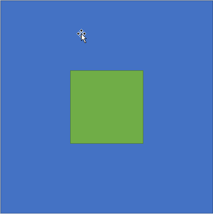

How to center a div - always works.

Here it is. The most dreaded and easy to forget css code. How to center a div.
Just why can't they do it with one line of code like they have with many other
functions that are arguably less needed than this one!
Well even though this isn't a one code fix, here is one way to center a div that
should always work.
.code {
display: flex;
justify-content: center;
align-items: center;
height: 100vh;
margin: 0;
}
If there is one thing to keep in mind whilst using this,
then it'd be to make sure to put display: flex; in your
body!
Maybe you'd benefit from bookmarking this! You probably need the function alot!